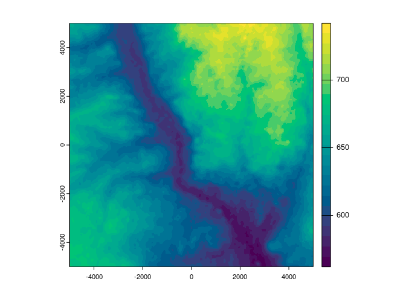

Overview
The vapour package provides access to the basic read functions available in GDAL for both raster and vector data sources.
The functions are deliberately lower-level than these data models and provide access to the component entities independently.
For vector data:
- read access to feature attributes.
- read access to raw binary geometry.
- read access to geometry in text forms (GeoJSON, WKT, GML, KML).
- read access to the extent, or bounding box, of feature geometries.
- helper functions to summarize feature identity and geometry status
All vector/feature read tasks can optionally apply an arbitrary limit to the maximum number of features read or queried, and all allow execution of OGRSQL to a layer prior to data extraction. In combination with a SQL query a bounding box spatial filter can be applied via the extent argument.
For raster data:
- read access to the list of available rasters within a collection source (subdatasets).
- read access to structural metadata for individual raster sources.
- read access for raw data using GDAL’s RasterIO framework and its dynamic image decimation / replication resampling algorithms.
- read access for raw data using GDAL’s Warper framework and its dynamic image warping, a superset of the RasterIO capabilities.
The vapour_warp_raster() function is a new feature in vapour, and reflects many learnings about how the warper works and what is needed for use. We simplify the approach taken in vapour_read_raster() by allowing specifying an extent and dimensions as a minimum, and this works for data sources that contain overviews (or pyramid levels-of-detail) as it automatically chooses an appropriate level for the request made. This works for files, urls, database connections, online tiled image servers, and all the various ways of specifying GDAL data sources.
The workflows available are intended to support development of applications in R for these vector and raster data without being constrained to any particular data model.
Installation
The package can be installed from CRAN.
## install.packages("remotes")
remotes::install_cran("vapour")The development version can be installed from Github, easiest is via the hypertidy universe:
options(repos = c(
hypertidy = 'https://hypertidy.r-universe.dev',
CRAN = 'https://cloud.r-project.org'))
install.packages("vapour")To install the development version the more github-traditional way:
remotes::install_github("hypertidy/vapour")You will need development tools for building R packages.
On Linux and MacOS building also requires an available GDAL installation, but on Windows the ROpenSci rwinlib tools are used and the required GDAL will be downloaded and used when building the package. The hypertidy universe way also has access to binaries. On windows this installation is self-contained and only affects the use of R, it can be used alongside other applications using GDAL.
For MacOS the package build is controlled by an internal CRAN process including configure arguments for the gdal and proj data directories.
Purpose
The goal of vapour is to provide a basic GDAL API package for R. The key functions provide vector geometry or attributes and raster data and raster metadata.
The priority is to give low-level access to key functionality rather than comprehensive coverage of the library. The real advantage of vapour is the flexibility of a modular workflow, not the outright efficiency.
A parallel goal is to be freed from the powerful but sometimes limiting high-level data models of GDAL itself, specifically these are simple features and affine-based regular rasters composed of 2D slices. (GDAL will possibly remove these limitations over time but still there will always be value in having modularity in an ecosystem of tools.)
GDAL’s dynamic resampling of arbitrary raster windows is also very useful for interactive tools on local data, and is radically under-utilized. A quick example, topography data is available from Amazon compute servers, first we need a config file for the source:
elevation.tiles.prod <- tempfile(fileext = ".xml")
writeLines('<GDAL_WMS>
<Service name="TMS">
<ServerUrl>https://s3.amazonaws.com/elevation-tiles-prod/geotiff/${z}/${x}/${y}.tif</ServerUrl>
</Service>
<DataWindow>
<UpperLeftX>-20037508.34</UpperLeftX>
<UpperLeftY>20037508.34</UpperLeftY>
<LowerRightX>20037508.34</LowerRightX>
<LowerRightY>-20037508.34</LowerRightY>
<TileLevel>14</TileLevel>
<TileCountX>1</TileCountX>
<TileCountY>1</TileCountY>
<YOrigin>top</YOrigin>
</DataWindow>
<Projection>EPSG:3857</Projection>
<BlockSizeX>512</BlockSizeX>
<BlockSizeY>512</BlockSizeY>
<BandsCount>1</BandsCount>
<DataType>Int16</DataType>
<ZeroBlockHttpCodes>403,404</ZeroBlockHttpCodes>
<DataValues>
<NoData>-32768</NoData>
</DataValues>
<Cache/>
</GDAL_WMS>', elevation.tiles.prod)
## we want an extent
ex <- c(-1, 1, -1, 1) * 5000 ## 10km wide/high region
## Madrid is at this location
pt <- cbind(-3.716667, 40.416667)
crs <- sprintf("+proj=laea +lon_0=%f +lat_0=%f +datum=WGS84", pt[1,1,drop = TRUE], pt[1,2, drop = TRUE])
dm <- c(256, 256)
vals <- vapour::vapour_warp_raster(elevation.tiles.prod, extent = ex, dimension = dm, wkt = crs)
## now we can use this in a matrix
image(m <- matrix(vals[[1]], nrow = dm[2], ncol = dm[1])[,dm[2]:1 ])
## using the image list format
x <- list(x = seq(ex[1], ex[2], length.out = dm[1] + 1), y = seq(ex[3] ,ex[4], length.out = dm[1] + 1), z = m)
image(x)
## or as a spatial object
library(raster)
#> Loading required package: sp
r <- setValues(raster(extent(ex), nrows = dm[2], ncols = dm[1], crs = crs), vals[[1]])
contour(r, add = TRUE)If we want more detail, go ahead:
dm <- c(512, 512)
vals <- vapour::vapour_warp_raster(elevation.tiles.prod, extent = ex, dimension = dm, wkt = crs)
(r <- setValues(raster(extent(ex), nrows = dm[2], ncols = dm[1], crs = crs), vals[[1]]))
#> class : RasterLayer
#> dimensions : 512, 512, 262144 (nrow, ncol, ncell)
#> resolution : 19.53125, 19.53125 (x, y)
#> extent : -5000, 5000, -5000, 5000 (xmin, xmax, ymin, ymax)
#> crs : +proj=laea +lat_0=40.416667 +lon_0=-3.716667 +x_0=0 +y_0=0 +datum=WGS84 +units=m +no_defs
#> source : memory
#> names : layer
#> values : 562, 742 (min, max)
plot(r, col = hcl.colors(24))
GDAL is obstinately format agnostic, the A stands for Abstraction and we like that in R too, just gives us the data. Here we created a base matrix image object, and a raster package RasterLayer, but we could use the spatstat im, or objects in stars or terra packages, it makes no difference to the read-through-warp process.
This partly draws on work done in the sf package and the terra package and in packages rgdal and rgdal2. I’m amazed that something as powerful and general as GDAL is still only available through these lenses, but maybe more folks will get interested over time.
Warnings
It’s possible to give problematic “SELECT” statements via the sql argument. Note that the geometry readers vapour_read_geometry, vapour_read_geometry_text, and vapour_read_extent will strip out the SELECT ... FROM clause and replace it with SELECT * FROM to ensure that the geometry is accessible, though the attributes are ignored. This means we can allow the user or dplyr to create any SELECT statement. The function vapour_read_geometry will return a list of NULLs, in this case.
Examples
The package documentation page gives an overview of available functions.
help("vapour-package")See the vignettes and documentation for examples WIP.
Context
Examples of packages that use vapour are in development, RGDALSQL and lazyraster. RGDALSQL aims to leverage the facilities of GDAL to provide data on-demand for many sources as if they were databases. lazyraster uses the level-of-detail facility of GDAL to read just enough resolution from a raster source using traditional window techniques.
Limitations, work-in-progress and other discussion are active here: https://github.com/hypertidy/vapour/issues/4
We’ve kept a record of a minimal GDAL wrapper package here:
https://github.com/diminutive/gdalmin
Before those I had worked on getting sp and dplyr to at least work together https://github.com/dis-organization/sp_dplyrexpt and recently rgdal was updated to allow tibbles to be used, something that spbabel and spdplyr really needed to avoid friction.
Early exploration of allow non-geometry read with rgdal was tried here: https://github.com/hypertidy/gladr
Thanks to Edzer Pebesma and Roger Bivand and Tim Keitt for prior art that I crib and copy from. Jeroen Ooms helped the R community hugely by providing an accessible build process for libraries on Windows. Mark Padgham helped kick me over a huge obstacle in using C++ libraries with R. Simon Wotherspoon and Ben Raymond have endured ravings about wanting this level of control for many years.
Code of conduct
Please note that this project is released with a Contributor Code of Conduct. By participating in this project you agree to abide by its terms.